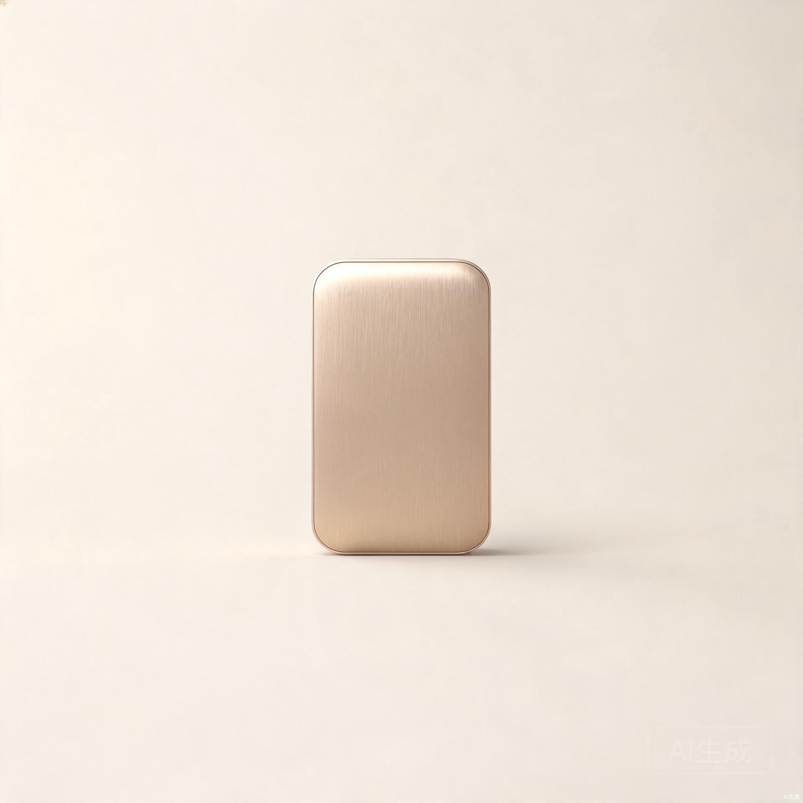

01 /
引言
我们花了六年，做了一个安静的东西。
从第一块被听诊的金属，到最后一毫米的声学迷宫——星弦 ONE 的诞生，是一次对声音的减法实验。我们相信，好的声学不是把一切放大，而是知道什么时候该沉默。
真正的安静，不是没有声音
而是只剩对的声音 — STARSTRING 声学团队
02 /
设计
一块整铝，一道 0.3mm 的缝，一颗单点呼吸灯。我们把能省的都省掉了，只留下触感——磨砂亲肤的表面，比安静更安静的开机方式。

chassis / 外壳一体成型铝 · 磨砂
surface / 表面亲肤涂层 · 抗指纹
led / 指示灯单点呼吸 · 可关闭
03 /
历程
2019
概念 —— 第一块被听诊的金属 · 起点
2022
原型 —— 声音的减法实验 · 第六版腔体
2025
定型 —— 主动降噪 -49dB · 静界达成
2026
发布 —— 星弦 ONE · 今晚
04 /
参数
发声单元双 10mm 动圈
主动降噪-49 dB
续航40 小时
连接Bluetooth 5.4 / LE Audio
重量4.6 g
05 /
定价
¥ 1,299
首发期赠「静界」会员一年